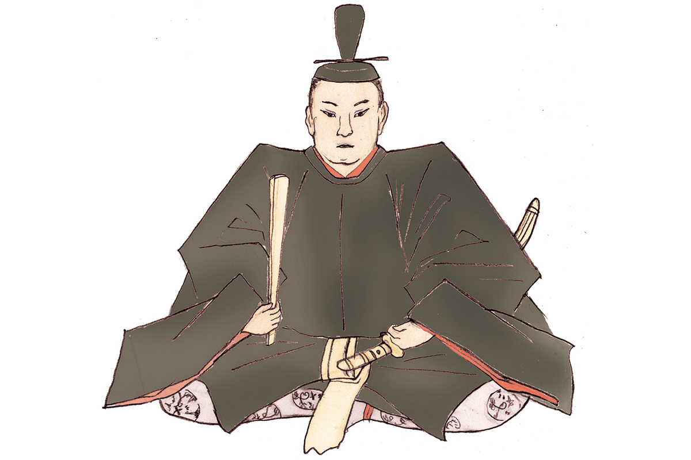
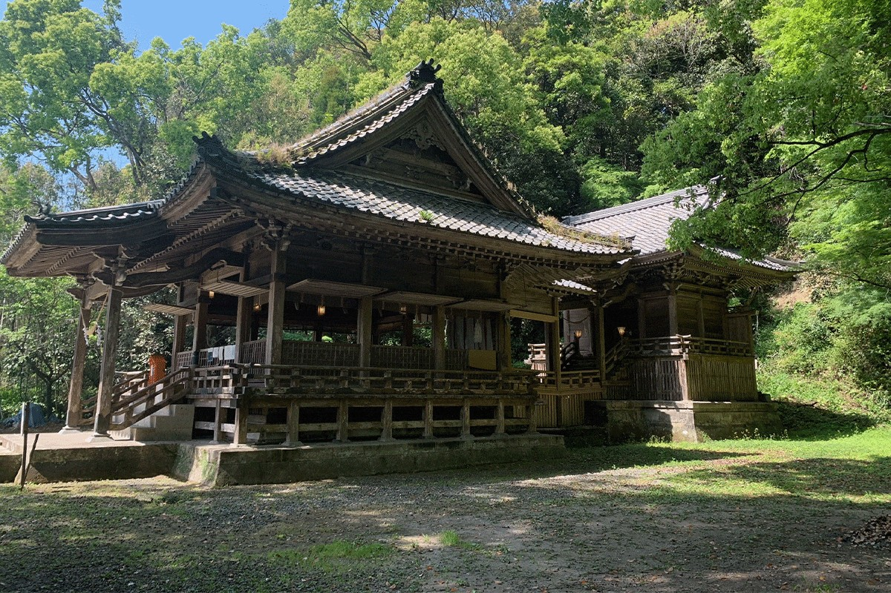
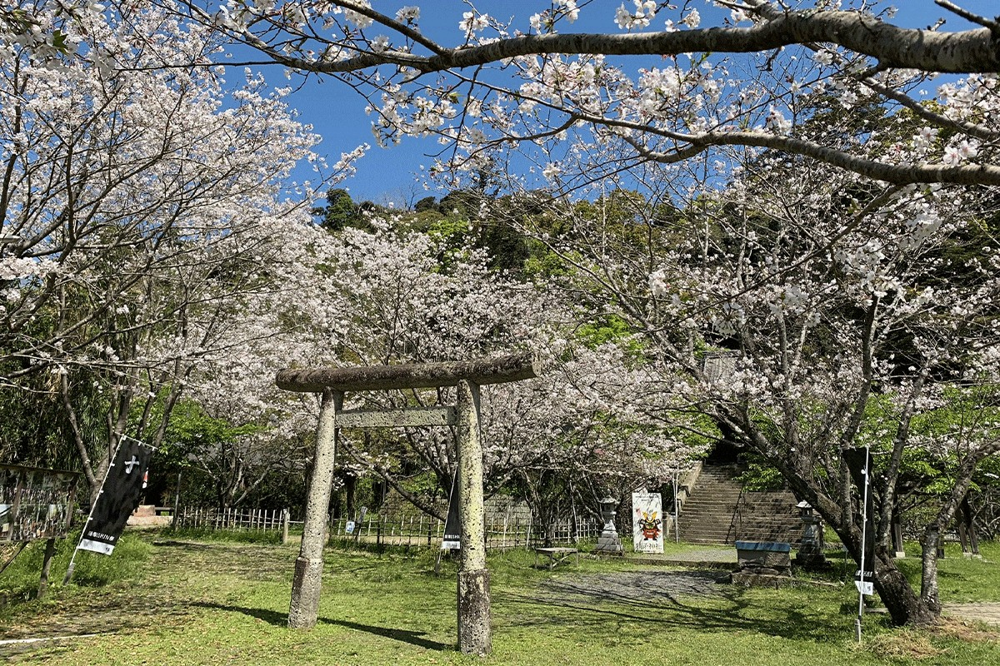

Префектура Кагосима · Аира · история
Ёсихиро Симадзу: князь Сацумы, который прорвался сквозь вражескую армию при Сэкигахаре

С конца XV до конца XVI века Япония жила в непрерывной войне, и об этих временах до сих пор рассказывают легенды. Одна из самых громких связана с Ёсихиро Симадзу из Сацумы: в битве при Сэкигахаре он не бежал от победителей, а прошёл прямо сквозь их строй.
Эпоха
Время воюющих провинций
К концу XV века сёгунат Муромати окончательно потерял власть. Прежние наместники провинций уступили место новым правителям, даймё, которые сами собирали армии и делили страну силой. Эпоху воюющих провинций в Японии любят до сих пор: многие её полководцы стали героями книг, фильмов и игр.
Ёсихиро Симадзу был одним из главных даймё Кюсю. Какое-то время род Симадзу держал под контролем не только Сацуму, но и соседние провинции Бунго и Хюга. Однако в 1587 году на остров пришла армия Хидэёси Тоётоми, объединителя страны, и Симадзу пришлось покориться. Род потерял почти все завоёванные земли, а Ёсихиро стал служить Хидэёси. Говорят, тот относился к его военному таланту с большим уважением.
Сэкигахара
Прорыв сквозь вражеский строй
Больше всего Ёсихиро прославился в 1600 году, в битве при Сэкигахаре, которая решила судьбу Японии. Он воевал на стороне Западной армии, а перевес был у Восточной армии Иэясу Токугавы. Когда стало ясно, что сражение проиграно, Ёсихиро выбрал не бегство в тыл, а отход прямо через позиции противника.
Его способ отступления вошёл в историю под названием «сутэгамари». Небольшие отряды по очереди оставались позади, чтобы задержать погоню ценой собственной жизни, а основные силы тем временем уходили дальше. Так повторялось снова и снова, пока Ёсихиро не вырвался. Иэясу, по преданию, был поражён такой дерзостью.
«Я старый воин, мне не перейти через высокую гору Ибуки. Пусть меня убьют, но я умру лицом к врагу»
Ёсихиро Симадзу перед тем, как начать прорыв
Эти слова он сказал прямо перед отступлением. Уйти через горы было невозможно, и он решился на атаку, заранее приняв мысль о смерти.
Когда Ёсихиро вернулся в Сацуму, Иэясу поручил князьям Кюсю собрать войска и наказать его. Но взять Сацуму так и не удалось. Весь период Эдо княжество Сацума оставалось одним из самых сильных в стране, а в середине XIX века именно оно стало одним из центров движения за свержение сёгуната.
Хроника
Жизнь в датах
- 1535. Родился в провинции Сацума.
- 1554. Первый бой: вместе с отцом осаждал замок Ивацуруги.
- 1557. В походе против рода Гамо впервые добыл голову врага, но сам получил пять стрел и тяжёлые раны.
- 1572. В битве при Кидзакибару с 300 воинами разбил трёхтысячную армию рода Ито.
- 1578. Отличился в битве при реке Мимикава, где Симадзу разгромили войска рода Отомо, пришедшие из Бунго.
- 1586. Вторгся в Бунго и занял часть земель Отомо.
- 1587. Проиграл армии Хидэёси Тоётоми в битве при Нэдзиросаке в провинции Хюга и признал его власть.
- 1592 и 1597. Дважды воевал в Корее во время походов Хидэёси.
- 1600. Прорвался сквозь вражеские ряды в битве при Сэкигахаре.
- 1619. Умер от болезни в провинции Осуми.
Где увидеть
Святилище Кувасихоко в Кадзики
В городе Аира, в районе Кадзики, стоит святилище Кувасихоко, где Ёсихиро Симадзу почитают как божество. Каждый год сюда приносят в дар выступления мастеров боевых искусств и местные народные представления.


Святилище Кувасихоко
- Адрес
- префектура Кагосима, город Аира, Кадзики-тё, Хикияма, 311-и
- Телефон
- +81 995-62-5716